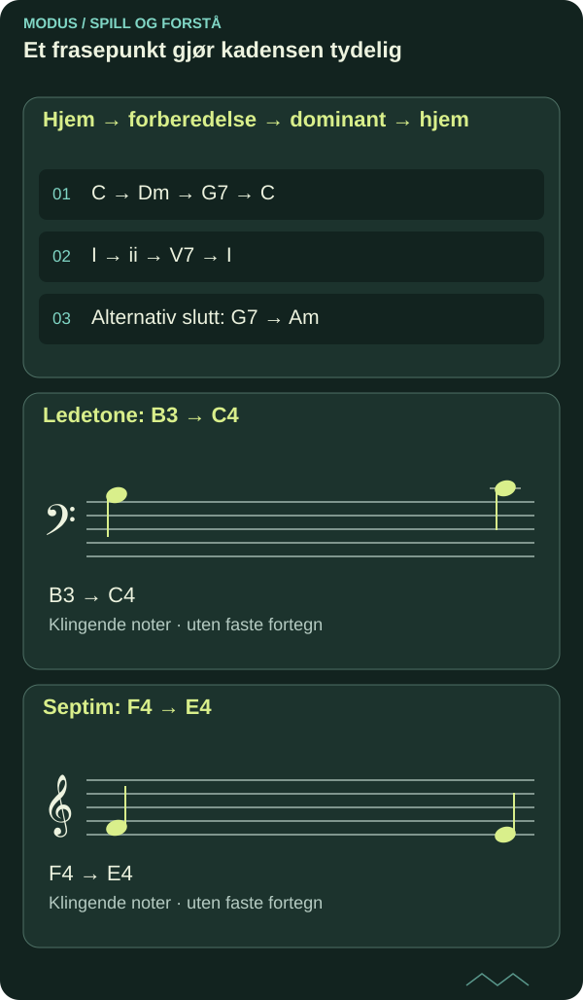

Kadens og tonale funksjoner: bygg en tydelig avslutning
En akkordrekke kan fortsette, stoppe underveis eller lande. Funksjon og kadens gir et språk for å undersøke forskjellen i en faktisk frase.
DETTE LÆRER DU
Kadens og tonale funksjoner: bygg en tydelig avslutning
- Identifisere tonika, predominant og dominant i en frase.
- Skille autentisk, halv-, plagal og skuffende kadens.
- Realisere ulike avslutninger med kontrollert bass og melodi.

Funksjon er en rolle i en sammenheng
I C-dur er C tonika, I: et vanlig harmonisk hjem. F, IV, og Dm, ii, kan forberede dominanten G eller G7, V eller V7. Vi bruker her predominant som samlebetegnelse for denne forberedelsen. Begrepet subdominant brukes både om IV og, i enkelte teoritradisjoner, om en bredere funksjonsgruppe.
Spill C–Dm–G7–C, én akkord per takt. Basstonene C–D–G–C viser en tydelig bevegelse ut og hjem. Men en akkord får ikke alltid samme rolle bare fordi navnet er likt. C i G-dur er IV, og en C-klang kan fungere som modalt sentrum i et forløp uten dominantkadens.

Les diagrammet som tekst
- Hjem → forberedelse → dominant → hjem: C → Dm → G7 → C; I → ii → V7 → I; Alternativ slutt: G7 → Am
- Ledetone: B3 → C4: B3 → C4
- Septim: F4 → E4: F4 → E4
En kadens trenger et frasepunkt
En kadens er en avslutningshendelse i en musikalsk frase. V–I midt i en rask sekvens kan støtte tonaliteten uten å oppleves som en full fraseavslutning. Lytt til melodi, varighet, metrisk plassering og pausen etterpå.
Lag en firetakters melodi i C-dur med tonene E–G–F–D i takt 1, E–F–A–F i takt 2, D–B–A–B i takt 3 og en lang C i takt 4. Harmoniser med C–F–G7–C. Alle toner i melodien er firedeler unntatt siste C som er helnote. Toner utenfor akkorden må høres som melodiske bevegelser, ikke automatisk som nye akkorder.
Fire avslutninger du kan sammenligne
Autentisk kadens går fra V til I. I streng klassisk terminologi krever en perfekt autentisk kadens grunnstilling i begge akkorder og tonika i melodien ved ankomst. En V–I-avslutning med ters i melodien kan derfor være autentisk uten å være perfekt autentisk.
En halvkadens slutter på V og lar et svar vente. En plagal kadens går IV–I. En skuffende kadens bruker ofte V–vi i dur, slik som G7–Am i C-dur. Bytt bare takt 4 i eksemplet: C blir Am, og meloditonen kan være C. Den samme melodiske ankomsten får en annen harmonisk betydning.
Tendensene inne i dominanten
G7 består av G–B–D–F. I en enkel klassisk oppløsning går ledetonen B opp til C, mens akkordseptimen F går ned til E. Dette skaper to små bevegelser med tydelig retning. Spill B–F og deretter C–E før du legger til bassen G–C.
Ikke gjør dette til en regel om at alle forekomster av B og F alltid må bevege seg slik i alle stiler. Register, stemmeplassering og sjanger har betydning. I jazz kan Cmaj7 være målklangen, og i et riff kan åpne kvinter dominere. Forklar hvilken stil du arbeider i før du vurderer satsen.
Piano og gitar: samme funksjon, ulik fordeling
På piano spiller venstre hånd grunntonene C–F–G–C. La høyre hånd spille E–G–C, F–A–C, F–G–B og E–G–C. Følg særlig F–E og B–C i siste skifte. Hør hver hånd alene før du setter dem sammen.
På gitar kan du begynne med åpne C-, Fmaj7-, G7- og C-grep. Fmaj7 er her en farget variant av IV; den er ikke identisk med F-durtreklangen. Spill deretter bare to toner om gangen: B på andre streng åpen og F på første streng bånd 1, til C på andre streng bånd 1 og E på første streng åpen. Legg bassen til i et separat opptak.
Fra øvelse til en analyse med begrunnelse
Skriv åtte takter der takt 4 slutter på G og takt 8 på C. La første frase stille et spørsmål med halvkadens og den andre svare med autentisk kadens. Bruk samme motiv i begge fraser og endre bare avslutningen. Da hører du kadensens formfunksjon.
Merk takt, akkord, romertall og melodisk sluttone. Oppgi minst ett alternativ dersom en akkord kan forstås på flere måter. En begrunnet analyse sier både hva tonematerialet er og hvorfor akkurat dette punktet oppleves som en avslutning. Flytt til slutt hele skissen til G-dur og kontroller at ledetonen nå er F♯.
Tre avslutninger med samme innledning
Bruk G-dur. Spill G–Am, ett taktslag per akkord. Prøv så tre forskjellige avslutninger med en tydelig pause etter siste klang. Hold øvingen enkel ved å spille bass med venstre hånd og akkordtoner med høyre, eller spill akkordgrep og syng overstemmen.
| Avslutning | Bass fra Am | Overstemme fra Am | Hør etter |
|---|---|---|---|
| G–Am–D | A–D | E–F♯ | Halvslutning. Frasen stanser på V. |
| G–Am–D7–G | A–D–G | E–F♯–G | Autentisk avslutning. V7 går til I. |
| G–Am–D7–Em | A–D–E | E–F♯–G | Skuffende avslutning. V7 går til vi, selv om overstemmen går til G. |
Legg C i en mellomstemme over D7. La den gå til B både over G og over Em. Nå har de to siste variantene de samme to oppløsningene i overstemmene. Spill dem vekselvis og beskriv hva du hører når bassen går til G i den ene og E i den andre.
Prøv selv. Flytt de to siste variantene til F-dur. Behold samme skalatrinn i bassen og overstemmen. Spill bare de to sluttakkordene når du har funnet dem, og spill dem deretter i hele frasen.
Kontroll. Bass C–F gir C7–F. Bass C–D gir C7–Dm. I begge tilfeller kan E gå til F og B♭ til A. Vurder kadensen ved frasepunktet du hører, med både bass og overstemmer som grunnlag.
Kildegrunnlag for kadens og frasefunksjon. Musikkteori v3 med redaksjonelle notater, §§2.13–2.13.5. Macalester – Harmonic function and cadences
Kildegrunnlag og faglig status
Original norsk MODUS-tekst med egne undervisningseksempler. Faglig referansegrunnlag for videre kontroll:
Under arbeid – ikke faglig sluttgodkjent. Artikkelen dokumenterer ingen personlig mestring og gir ingen formell studie- eller publiseringsgodkjenning. Skriftlig forklaring, faktisk spill og lytting må vurderes hver for seg.
FRA LESING TIL SPILLING
Prøv det selv.
Lever en åttetakters skisse med halvkadens i takt 4 og autentisk kadens i takt 8. Lag også en skuffende variant. Spill på gitar og reduser til bass og melodistemme på piano.
- Gjør et selvstendig første forsøk før du ser quizfasiten.
- Spill den konkrete modellen på gitar og piano, og lytt til forskjellen.
- Lag en ny variant og behold første og bearbeidede versjon separat.
SJEKK FORSTÅELSEN
Hva sitter igjen?
Tre spørsmål om det du har lest. Alle tre riktige gir fullført quiz. Du kan prøve så mange ganger du vil.
Fullføring lagres i denne nettleseren og deles mellom norsk og engelsk.
Du har svart riktig på alle tre spørsmålene. Ta ideen med til instrumentet.
Til artikkelbiblioteket ↗︎ANBEFALT NESTE STEG
Sekundærdominanter: gi en akkord sin egen opptakt
Neste del av den foreslåtte faglige ruten. Velg emner ut fra forkunnskap og behov.
Sekundærdominanter: gi en akkord sin egen opptakt ↗︎